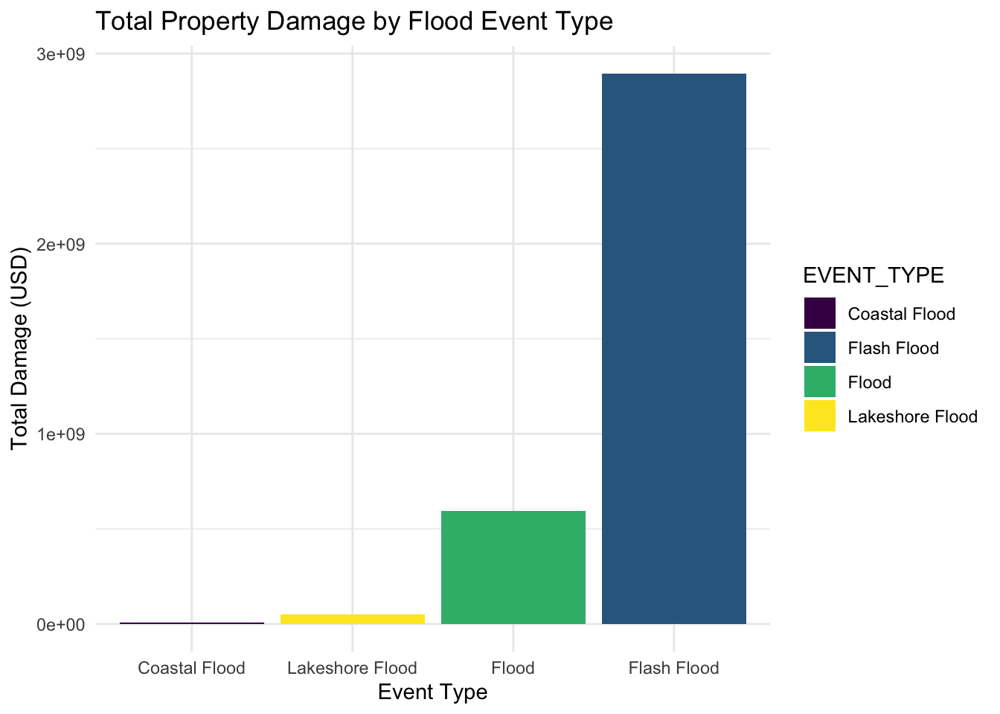

Rows: 13,661
Columns: 25
$ EVENT_ID <int> 863537, 863585, 863586, 864250, 864251, 864461, 8644…
$ EPISODE_ID <int> 143838, 143845, 143845, 143983, 143983, 144018, 1440…
$ STATE <chr> "WISCONSIN", "WISCONSIN", "WISCONSIN", "WISCONSIN", …
$ YEAR <int> 2020, 2020, 2020, 2020, 2020, 2020, 2020, 2020, 2020…
$ MONTH_NAME <chr> "January", "January", "January", "January", "January…
$ EVENT_TYPE <chr> "Flood", "Flood", "Flood", "Lakeshore Flood", "Lakes…
$ INJURIES_DIRECT <int> 0, 0, 0, 0, 0, 0, 0, 0, 0, 0, 0, 0, 0, 0, 0, 0, 0, 0…
$ INJURIES_INDIRECT <int> 0, 0, 0, 0, 0, 0, 0, 0, 0, 0, 0, 0, 0, 0, 0, 0, 0, 0…
$ DEATHS_DIRECT <int> 0, 0, 0, 0, 0, 0, 0, 0, 0, 0, 0, 0, 0, 0, 0, 0, 0, 0…
$ DEATHS_INDIRECT <int> 0, 0, 0, 0, 0, 0, 0, 0, 0, 0, 0, 0, 0, 0, 0, 0, 0, 0…
$ DAMAGE_PROPERTY <chr> "96.00K", "0.00K", "0.00K", "10.70M", "0.00K", "50.0…
$ DAMAGE_CROPS <chr> "0.00K", "0.00K", "0.00K", "0.00K", "0.00K", "0.00K"…
$ FLOOD_CAUSE <chr> "Ice Jam", "Heavy Rain / Snow Melt", "Heavy Rain / S…
$ CATEGORY <int> NA, NA, NA, NA, NA, NA, NA, NA, NA, NA, NA, NA, NA, …
$ BEGIN_LOCATION <chr> "OCONTO", "KEWAUNEE", "OCONTO", "", "", "MATNEY", "S…
$ END_LOCATION <chr> "OCONTO", "KEWAUNEE", "OCONTO", "", "", "KELLERSVILL…
$ LATITUDE <dbl> 44.8939, 44.4607, 44.9116, NA, NA, 36.2495, 36.5023,…
$ LONGITUDE <dbl> -87.8492, -87.5019, -87.8422, NA, NA, -81.8980, -81.…
$ FATALITY_AGE <int> NA, NA, NA, NA, NA, NA, NA, NA, NA, NA, NA, NA, NA, …
$ FATALITY_SEX <chr> NA, NA, NA, NA, NA, NA, NA, NA, NA, NA, NA, NA, NA, …
$ FATALITY_LOCATION <chr> NA, NA, NA, NA, NA, NA, NA, NA, NA, NA, NA, NA, NA, …
$ BEGIN_DATE_TIME <chr> "01-JAN-20 00:00:00", "01-JAN-20 00:00:00", "01-JAN-…
$ MAGNITUDE_TYPE <chr> "", "", "", "", "", "", "", "", "", "", "", "", "", …
$ MAGNITUDE <dbl> NA, NA, NA, NA, NA, NA, NA, NA, NA, NA, NA, NA, NA, …
$ BEGIN_DATE <date> 2020-01-01, 2020-01-01, 2020-01-01, 2020-01-11, 202…Floods Unfolded: A Data-Driven Exploration of Flood Events in the US
Project Description
In this exploratory data analysis (EDA) report, we delve into NOAA dataset to gauge the dangers posed by floods within the United States. Our investigation aims to quantify the peril and financial repercussions of flood events, analyzing their severity and the economic burdens they impose.
we seek to answer pressing questions about the nature and consequences of floods:
How Dangerous are Floods? We will explore the human toll of flood events by examining metrics such as injury and death counts. This will provide insights into the physical danger floods pose to communities.
How Expensive are Floods? We will assess the economic impact of floods by analyzing property and crop damage estimates. This will shed light on the financial strain floods inflict on individuals and the broader economic system.
Community Patterns in Flood Losses: By investigating the geographical and temporal patterns of flood events and their consequences, we aim to discern any trends in the types of communities that bear the brunt of flood losses. This includes evaluating demographic, economic, and geographic factors that may correlate with higher levels of damage and distress.
This comprehensive EDA will utilize visualization tools and statistical analysis to present a clear picture of flood impacts, aiming to inform policymakers, community planners, and the general public. Our objective is to enhance understanding and preparedness for future flood events, potentially guiding efforts to mitigate risks and improve community resilience.
Datasets
There are three files in total. Datasets from NOAA, datasets from FEMA and census data.
NOAA: https://www.ncei.noaa.gov/pub/data/swdi/stormevents/csvfiles/ FEMA1: https://www.fema.gov/openfema-data-page/fema-web-disaster-summaries-v1 FEMA2: https://www.fema.gov/openfema-data-page/disaster-declarations-summaries-v2 Census Data: https://www.census.gov (somewhere inside)
Import NOAA Data
This report focuses on data from 2020 to 2021.
Merge detail2020 ,fata 2020 and location2020; detail2021, fata 2021 and location2021
The detail, location and fatality datasets can be merged into one single dataset due to some common columns. This project only focuses on “FLOOD” as a disaster type. There should be four types of flodds in total: “Flood”, “Lakeshore Flood”, “Flash Flood”, “Coastal Flood”.
Choose specific columns from NOAA Data
The “combined” dataset is the raw dataset that we have right now. This step is to remove some columns that are not helpful for EDA, and we are going to choose some columns that might be interesting.
Generate a dataset ‘dangerousflood’ for further EDA
Import census data
The datasets are not used in this report.
Import FEMA datasets
There are API endpoints from FEMA website without downloading the data directly.
FEMA dataset version 2, however the sample size is small.
Merge FEMA datasets
Merge them into one dataset.
Glimpse NOAA - dangerousflood
EDA on States
We aim to identify the states that are most frequently affected by flooding events. Our analysis will highlight the top five states with the highest number of recorded flood incidents. Additionally, we will quantify the impact by presenting the total property and crop damages incurred in each of these states.
Flood counts for states
[1] "Every row has value in the State column."# A tibble: 55 × 2
# Groups: STATE [55]
STATE n
<chr> <int>
1 ALABAMA 336
2 ALASKA 25
3 AMERICAN SAMOA 11
4 ARIZONA 454
5 ARKANSAS 460
6 CALIFORNIA 367
7 COLORADO 147
8 CONNECTICUT 86
9 DELAWARE 38
10 DISTRICT OF COLUMBIA 29
# ℹ 45 more rows[1] "VIRGINIA"# A tibble: 5 × 2
STATE Count
<chr> <int>
1 KENTUCKY 696
2 MISSOURI 797
3 NEW YORK 611
4 TEXAS 751
5 VIRGINIA 1040It appears that flood occurrences are not evenly distributed across the United States, with some states experiencing a higher frequency of events. Notably, Virginia stands out with a total of 1,040 reported flood incidents for the years 2020 and 2021. On average, Virginia experienced nearly three flood events every day and this high frequency highlights the significant and persistent challenge for government and people.
Missouri had 797 events in total. Kentucky, Texas, and New York also recorded 696, 751, and 611 occurrences respectively.
State vs Property and Crop Damages
Now it’s time to visualize the financial/agricultural damages of flood.
Property Damage
# A tibble: 55 × 3
STATE Total_Damage_Property Total_Damage_Crops
<chr> <dbl> <dbl>
1 ALABAMA 4985000 0
2 ALASKA 15429740 0
3 AMERICAN SAMOA 701000 81000
4 ARIZONA 87238500 0
5 ARKANSAS 1548000 0
6 CALIFORNIA 22385000 18000
7 COLORADO 2106710 425240
8 CONNECTICUT 7110510 0
9 DELAWARE 3600000 0
10 DISTRICT OF COLUMBIA 100000 0
# ℹ 45 more rowsThe data indicates that New York incurs the highest total property damage from floods (over 15000k), when measured in thousands of U.S. dollars, followed by Louisana, Michigan, and Pennsylvania. This finding is consistent with the high frequency of flooding events reported in New York. Those state are mostly in eastern side of the state, suggest a higher flood impact on the east.
Virginia has a low total property damage than the above states, and interestingly, Missouri, despite having a high number of flood incidents, does not correspond with similarly high levels of property damage. That might suggest an effective flood management by the state government or some location advantages that mitigate the cost.
Total Property Damage in a map visual
The distribution of flood-related property damage across the United States reveals a distinct pattern, with the eastern regions, sustaining the most significant financial impact.
The Middle to west and Northern states report relatively minimal damage, which might reflect less frequent flood events. Conversely, the Southern states experience severe property damage due to flooding. This severity could be due to a combination of factors, including the prevalence of hurricanes and tropical storms that bring intense rainfall. Also, coastal areas have a relatively high damage on property.
Crops Damage
The assessment of flood-induced crop damage across states reveals a significant rightward skew in the data distribution, necessitating a logarithmic transformation to facilitate a more interpretable visual representation. It’s noteworthy that crop damage data is not uniformly available for all states; numerous entries are marked as ‘NA’, suggesting either the absence of damage or unreported figures within the NOAA dataset. Despite this constraint, the existing data indicates that states with extensive agricultural sectors—particularly the Dakotas, Minnesota, and Iowa—bear the brunt of the damage. This pattern underscores the vulnerability of these regions’ agricultural lands to flooding events and the substantial economic repercussions that ensue.
Total Property Damage in a map visual
Visual analysis of the crop damage data illuminates a notable concentration of severe impacts in the northern part of the United States. States like the Dakotas, Minnesota, and Iowa, which are characterized by extensive agricultural activity, appear to bear the brunt of the damage. These regions, often referred to as the nation’s breadbasket, may be particularly susceptible due to their reliance on large-scale farming and the potential for flooding to disrupt vast swathes of cropland.
In the South, Texas stands out with significant crop damage, possibly attributable to its size, diverse climate zones, and exposure to extreme weather events such as hurricanes, which can bring about widespread flooding. The damage in these southern areas, though less concentrated than in the North, still represents a substantial economic impact, highlighting the vulnerability of agricultural sectors to flooding across varied geographical landscapes.
Injuries & Deaths
Investigating the relationship between flood-related injuries and fatalities and their distribution among the states could provide insights into the human cost of these natural disasters and understand how dangerous flood is.
The data indicates that Tennessee and New York experience the highest numbers of deaths and injuries due to flooding, suggesting these states are particularly vulnerable to the more perilous consequences of such events. Texas and Arizona also report significant numbers, where probably due to the geographic location.
This is a time series of how injuries and deaths occured in this particular timeframe. It turned out that between July 2021 and October 2021, a period that coincides with some of the most devastating floods. This trend underscores the heightened risk of serious harm during such events, as evidenced by the consistent occurrence of deaths throughout this timeframe. Thus, we can’t conclude flood as a seasonal event.This data highlights the critical importance of effective flood management and emergency response measures all over the year, particularly during periods of high risk.
EDA ON EVENT_TYPE / CAUSE
The dataset contains four flood types and we are intrigued by the potential connections between flood type and causes. Thus, we built a contingency table that show all the detailed information. Such a table would organize the data to show the frequency of each cause within each flood type, allowing you to identify patterns or trends in the data.
Coastal Flood Flash Flood Flood Lakeshore Flood
404 0 0 156
Dam / Levee Break 0 12 5 0
Heavy Rain 0 7918 4455 0
Heavy Rain / Burn Area 0 136 3 0
Heavy Rain / Snow Melt 0 33 215 0
Heavy Rain / Tropical System 0 266 27 0
Ice Jam 0 1 26 0
Planned Dam Release 0 0 4 0The contingency table reveals a distinct distribution of causes across different flood types, with ‘Heavy Rain’ being the predominant cause for both ‘Flash Flood’ and the more general category labeled as ‘Flood.’ However, for ‘Lakeshore Flood’ and ‘Coastal Flood,’ the dataset does not provide information on the causes, leaving a gap in our understanding of the factors that contribute to these specific types of flooding. This absence of data prevents us from drawing concrete conclusions about what triggers ‘Lakeshore Flood’ and ‘Coastal Flood’ events, highlighting an area where further data collection and research are necessary to complete the picture of flood causality.
Flood occurences in the country
Thus, we created a new subset called ‘coastal_lakeshore_floods’, which only contains ‘Lakeshore Flood’ and ‘Coastal Flood’.
Explore the relationship between flood occurrences and location.
The absence of precise longitude and latitude data for coastal and lakeshore floods in the dataset does present a limitation for detailed geospatial analysis. Nevertheless, it is reasonable to infer that such events predominantly occur along coastlines and lake shores. Despite this data gap, the overall trend suggests a higher incidence of floods in the eastern regions of the United States. This pattern may be influenced by a variety of factors, including regional climate conditions, topography, and the presence of water bodies such as rivers and estuaries that are prone to overflowing.
In contrast, the Western states, aside from coastal areas like California, Oregon, and Washington, report fewer flood events. This could reflect the region’s different climate and landscape characteristics, which include arid areas and mountainous terrains that are less susceptible to flooding compared to the flat and water-rich Eastern landscapes. However, coastal Western states, with their proximity to the Pacific Ocean, do experience their share of flood events, potentially related to Pacific storms and seasonal weather patterns.
`summarise()` has grouped output by 'STATE'. You can override using the
`.groups` argument.list()Now I gave a state-based visualization of flood events, categorized by type and delineated by state, reveals a pronounced concentration of larger circles—denoting a higher number of floods—in the eastern regions. This correlates with the elevated levels of property damage recorded in these areas. On the other hand, the West Coast, particularly Oregon, and Washington, displays a distinct pattern: these states experience a moderate prevalence of flood and flash flood events, yet with a comparatively lower impact on property damage (except for California).
Flood Type vs Financial Loss
Property Damage
Now financial losses can be high related with different types of flood that I would like to pursue investigating.
Thus, I create a graph visualization below:

Flash floods stand out as the most financially destructive, incurring property damage expenditures that far exceed those of general floods—often referred to simply as ‘floods’ in the dataset—by approximately threefold. The scarcity of occurrences of lakeshore and coastal floods in the dataset precludes a comprehensive assessment of their average financial toll. However, the available figures suggest that while these flood types may be less frequent, when they do occur, the property damage might be significant. Thus, I ploted another grpah to indicate average losses.
# A tibble: 4 × 2
EVENT_TYPE Average_Damage
<chr> <dbl>
1 Coastal Flood 28090.
2 Flash Flood 346041.
3 Flood 125967.
4 Lakeshore Flood 341298.The data and plot suggess that lakeshore flood, while less frequent, tend to be more devastating on average when they do occur. This could be attributed to the specific characteristics of lakeshore floods, which may impact areas with high property values or cause more extensive damage due to their nature. In contrast, general floods, often simply referred to as ‘floods,’ appear to be the least destructive on a per-event basis, which might earn them the moniker of being relatively ‘gentle’ floods. Nonetheless, it’s important to note that the average property damage per flood event across all types is substantial, drawing attention to the significant financial burden these natural disasters can impose.
Crops Damage
# A tibble: 4 × 2
EVENT_TYPE Average_Crop_Damage
<chr> <dbl>
1 Coastal Flood 5602.
2 Flash Flood 15153.
3 Flood 1235.
4 Lakeshore Flood 0 Flash floods emerge as the predominant culprits for crop losses, underscoring their intense and often localized impact on agricultural areas. General floods also contribute to a considerable extent to the average crop damage, although to a lesser degree than flash floods. In stark contrast, coastal and lakeshore floods are found to have a negligible effect on crop damage. This lack of impact could be due to the geographical locations of such floods, which may not typically overlap with agricultural zones. These findings highlight the variable threats that different types of floods pose to agricultural livelihoods and can inform tailored approaches to agricultural risk management and resilience building.
FLood Type vs Injuries/Deaths
Flash floods are a deadly phenomenon that can claim lives with their sudden onset and rapid escalation, as evidenced by the recorded fatalities surpassing 200, while injuries stand at approximately 75. The data suggests that the lethality of flash floods is significantly higher compared to other flood types, with deaths outnumbering injuries. This trend is also observed with general floods, albeit with a lower overall count of affected individuals. The absence of fatalities associated with lakeshore and coastal floods in the records could indicate a lower human impact, or it may reflect data limitations. As flash floods are particularly lethal, with a higher number of fatalities relative to injuries, government should be careful for such type of flood as it might have very limited reaction time for people to evacuate.
EDA on Timeline
The plot of flood occurrences from 2020 to 2021 reveals a marked escalation in certain states, most notably Texas and New York. This upward trend in flood events signals a critical need for heightened awareness and proactive measures from local and federal government agencies.
This statement underscores the importance of the data findings and suggests the need for action based on the trend observed.
Conclusion
The analysis of the NOAA dataset underscores the significant threat floods pose across the United States, with their impact varying markedly by region. This exploration leads us to address three key questions regarding the nature and consequences of flood events:
How Dangerous are Floods? The human cost of floods is alarmingly high, as evidenced by the data. Floods often result in fatalities, highlighting their potential to cause severe harm and loss of life. Flash floods stand out as particularly dangerous, with a rapid onset leaving little time for effective response. Our findings emphasize the critical need for enhanced flood preparedness and swift emergency action to minimize the risk to human life.
How Expensive are Floods? Economically, floods impose a heavy toll on affected communities, causing extensive property and crop damage. The financial strain is not only borne by individuals but also impacts the broader economic system, underlining the need for comprehensive flood risk management and insurance strategies to alleviate the economic burden of such disasters.
Community Patterns in Flood Losses: The distribution of flood-related losses is not uniform, suggesting that certain communities are more vulnerable than others. The distribution of flood occurrences varies notably across different regions of the United States, with some states experiencing an increase in flood events in 2021 compared to the previous year. Coastal areas, New York and Texas, due to their relatively high incidence of flooding and associated economic losses, warrant special attention for mitigation and safety measures.
In summation, this report illuminates the dangers posed by floods, the huge economic costs they engender, and the uneven distribution of their impacts across communities. This gives an idea of the importance to enhance early warning systems and support the communities to flood-related devastation.